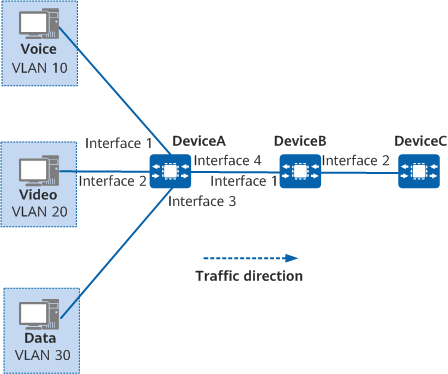

Example for Configuring Traffic Shaping to Limit the Rate of Different Services
Networking Requirements
In Figure 1, three servers are deployed to provide voice, video, and data services, and service packets traverse DeviceA, DeviceB, and DeviceC to reach the external network. The interface connected to the voice service host joins VLAN 10; the interface connected to the video service host joins VLAN 20; the interface connected to the data service host joins VLAN 30.

In this example, interface 1, interface 2, interface 3, and interface 4 represent 10GE 0/0/1, 10GE 0/0/2, 10GE 0/0/3, and 10GE 0/0/4, respectively.

Packets of voice, video, and data services are identified by 802.1p priorities 5, 3, and 2 respectively. However, jitter may occur when packets from interface 2 on DeviceB reach DeviceC. Table 1 lists the bandwidth requirements to limit jitter and ensure services.
Procedure
- On DeviceB, create VLANs and add interfaces to these VLANs so that users can access the network through DeviceB.
# Create VLANs 10, 20, and 30.
<HUAWEI> system-view [HUAWEI] sysname DeviceB [DeviceB] vlan batch 10 20 30
# Set the access mode of interfaces 10GE 0/0/1 and 10GE 0/0/2 to trunk, and add them to VLANs 10, 20, and 30.
[DeviceB] interface 10ge 0/0/1 [DeviceB-10GE0/0/1] portswitch [DeviceB-10GE0/0/1] port link-type trunk [DeviceB-10GE0/0/1] port trunk allow-pass vlan 10 20 30 [DeviceB-10GE0/0/1] quit [DeviceB] interface 10ge 0/0/2 [DeviceB-10GE0/0/2] portswitch [DeviceB-10GE0/0/2] port link-type trunk [DeviceB-10GE0/0/2] port trunk allow-pass vlan 10 20 30 [DeviceB-10GE0/0/2] quit
- Set priorities for DeviceA's interfaces connected to the hosts to differentiate packets of different services.
# On DeviceA, set the priorities of 10GE 0/0/1, 10GE 0/0/2, and 10GE 0/0/3 to 5, 3, and 2, respectively, and add 10GE 0/0/4 to VLANs 10, 20, and 30.
<HUAWEI> system-view [HUAWEI] sysname DeviceA [DeviceA] vlan batch 10 20 30 [DeviceA] interface 10ge 0/0/1 [DeviceA-10GE0/0/1] portswitch [DeviceA-10GE0/0/1] port link-type access [DeviceA-10GE0/0/1] port default vlan 10 [DeviceA-10GE0/0/1] port priority 5 [DeviceA-10GE0/0/1] quit [DeviceA] interface 10ge 0/0/2 [DeviceA-10GE0/0/2] portswitch [DeviceA-10GE0/0/2] port link-type access [DeviceA-10GE0/0/2] port default vlan 20 [DeviceA-10GE0/0/2] port priority 3 [DeviceA-10GE0/0/2] quit [DeviceA] interface 10ge 0/0/3 [DeviceA-10GE0/0/3] portswitch [DeviceA-10GE0/0/3] port link-type access [DeviceA-10GE0/0/3] port default vlan 30 [DeviceA-10GE0/0/3] port priority 2 [DeviceA-10GE0/0/3] quit [DeviceA] interface 10ge 0/0/4 [DeviceA-10GE0/0/4] portswitch [DeviceA-10GE0/0/4] port link-type trunk [DeviceA-10GE0/0/4] port trunk allow-pass vlan 10 20 30 [DeviceA-10GE0/0/4] quit
- Configure queue-based traffic shaping to limit the bandwidth of voice, video, and data services.
# Configure queue-based traffic shaping on DeviceB. Set the CIR values of voice, video, and data services to 3000 kbit/s, 5000 kbit/s, and 2000 kbit/s, respectively.
[DeviceB] interface 10ge 0/0/2 [DeviceB-10GE0/0/2] qos queue 5 shaping cir 3000 [DeviceB-10GE0/0/2] qos queue 3 shaping cir 5000 [DeviceB-10GE0/0/2] qos queue 2 shaping cir 2000 [DeviceB-10GE0/0/2] quit
Verifying the Configuration
# Display statistics about queues in the outbound direction on 10GE 0/0/2.
[DeviceB] display qos queue statistics interface 10ge 0/0/2 Queue CIR/PIR Passed Pass Rate Dropped Drop Rate Drop Time (% or kbps) (Packets/Bytes) (pps/bps) (Packets/Bytes) (pps/bps) ---------------------------------------------------------------------------------------------- 0 0 0 0 0 0 - 10000000 0 0 0 0 ---------------------------------------------------------------------------------------------- 1 0 0 0 0 0 - 10000000 0 0 0 0 ---------------------------------------------------------------------------------------------- 2 2000 54584 0 0 0 - 2000 5676736 0 0 0 ---------------------------------------------------------------------------------------------- 3 5000 49648 0 0 0 - 5000 5163392 0 0 0 ---------------------------------------------------------------------------------------------- 4 0 0 0 0 0 - 10000000 0 0 0 0 ---------------------------------------------------------------------------------------------- 5 3000 49998 0 0 0 - 3000 5199792 0 0 0 ---------------------------------------------------------------------------------------------- 6 0 0 0 0 0 - 10000000 0 0 0 0 ---------------------------------------------------------------------------------------------- 7 0 0 0 0 0 - 10000000 0 0 0 0 ----------------------------------------------------------------------------------------------
Configuration Scripts
-
# sysname DeviceB # vlan batch 10 20 30 # interface 10GE0/0/1 portswitch port link-type trunk port trunk allow-pass vlan 10 20 30 # interface 10GE0/0/2 portswitch port link-type trunk port trunk allow-pass vlan 10 20 30 qos queue 2 shaping cir 2000 kbps qos queue 3 shaping cir 5000 kbps qos queue 5 shaping cir 3000 kbps # return
-
# sysname DeviceA # vlan batch 10 20 30 # interface 10GE0/0/1 portswitch port link-type access port default vlan 10 port priority 5 # interface 10GE0/0/2 portswitch port link-type access port default vlan 20 port priority 3 # interface 10GE0/0/3 portswitch port link-type access port default vlan 30 port priority 2 # interface 10GE0/0/4 portswitch port link-type trunk port trunk allow-pass vlan 10 20 30 # return